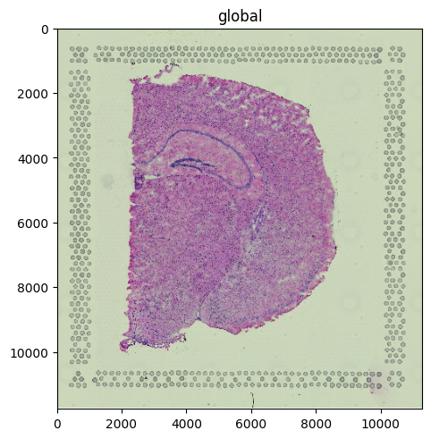
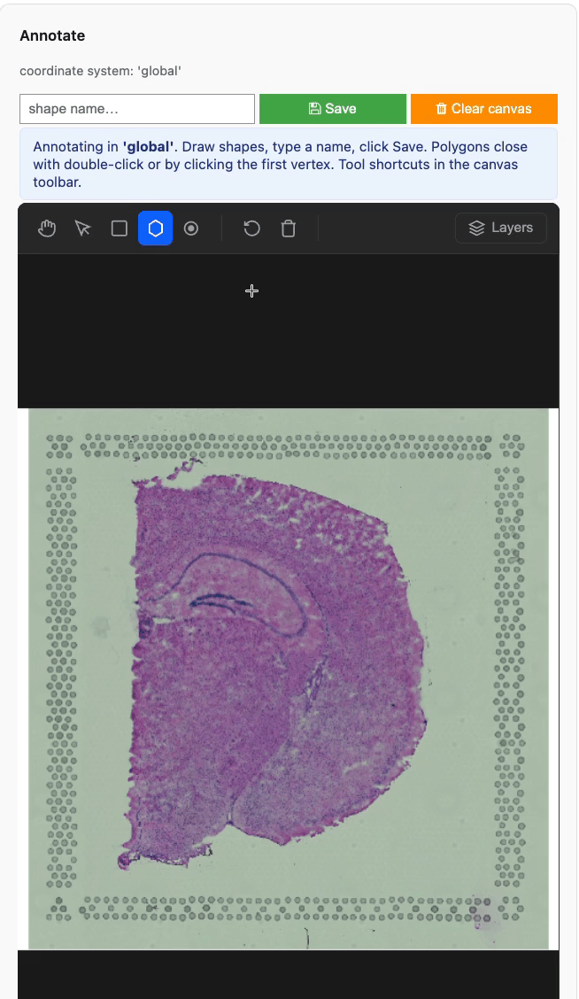
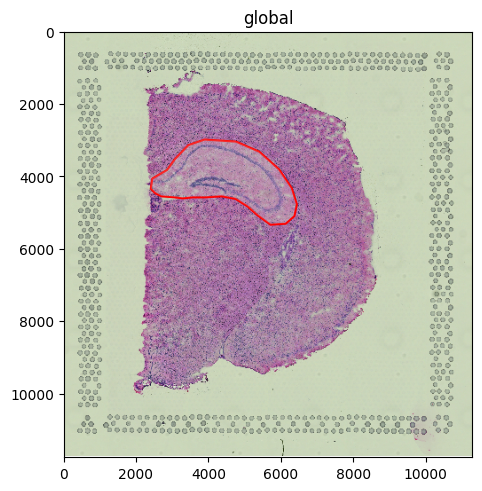
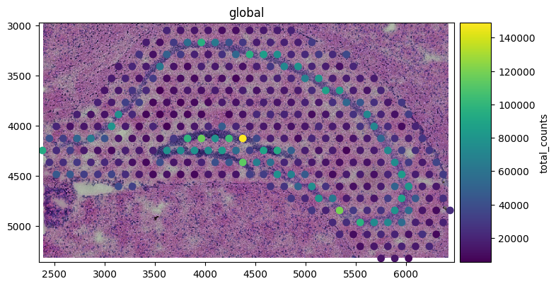

Interactive region annotation#
This tutorial shows how to use .pl.annotate() to draw regions of interest directly on top of a spatialdata-plot rendering and persist them as a ShapesModel element. The widget is built on anybioimage’s BioImageViewer, which renders the image once and handles all drawing client-side — so it works over SSH (Jupyter or VSCode-Remote-SSH) without streaming PNG frames per mouse-move.
Credit: This feature uses anybioimage’s BioImageViewer, which was identified as a suitable solution during the scverse Padua 2026 hackathon, where @EricMoerthVis, @Sonja-Stockhaus, and @asarigun implemented a first POC.
Dataset: a Visium H&E mouse brain section, downloaded by squidpy.datasets.visium_hne_sdata.
Requires the interactive extra:
pip install 'spatialdata-plot[interactive]'
Loading the dataset#
We’ll use the squidpy.datasets.visium_hne_sdata() test data to demonstrate the function. The SpatialData object contains a multi-resolution H&E image ('hne') and the spot polygons ('spots'), both aligned in the 'global' coordinate system.
import squidpy as sq
from shapely.geometry import Polygon
import spatialdata as sd
import spatialdata_plot # noqa: F401 (registers the .pl accessor)
from spatialdata.models import ShapesModel
from spatialdata.transformations.transformations import Identity
sdata = sq.datasets.visium_hne_sdata()
sdata
INFO Loading existing dataset from data/spatialdata/visium_hne_sdata.zarr
SpatialData object, with associated Zarr store: /Users/tim.treis/Documents/GitHub/spatialdata-plot-notebooks/examples/data/spatialdata/visium_hne_sdata.zarr
├── Images
│ └── 'hne': DataTree[cyx] (3, 11757, 11291), (3, 5878, 5645), (3, 2939, 2822), (3, 1469, 1411)
├── Shapes
│ └── 'spots': GeoDataFrame shape: (2688, 2) (2D shapes)
└── Tables
└── 'adata': AnnData (2688, 18078)
with coordinate systems:
▸ 'global', with elements:
hne (Images), spots (Shapes)
Inspect what we’ll annotate#
Before drawing, let’s render the image so we know what to outline.
sdata.pl.render_images("hne").pl.show()

Launching the widget#
annotate() is a terminal step on a render chain: it rasterises whatever you composed upstream (render_images / render_shapes / render_points / render_labels) and hands the resulting RGB to the BioImageViewer. Drawn shapes are mapped back from canvas pixels into the chosen coordinate system and stored in sdata.shapes[<name>] with an Identity transformation in that CS.
(
sdata
.pl.render_images("hne")
.pl.annotate(coordinate_systems="global")
)
The code above is intentionally a Markdown block, not a code cell — the widget needs a live JS runtime, which the static docs build can’t provide. Run the line in your own notebook (Jupyter Lab or VSCode-Remote-SSH) to see the canvas.
Drawing tools: rectangle, polygon, point. Points are stored as small circle polygons (radius scaled to the rendered image’s CS extent) so the resulting ShapesModel is uniform-type.
When you click Save the shapes on the canvas are committed to sdata.shapes[<name>] as a single ShapesModel (multiple rows if you drew multiple shapes). Same-name commits overwrite. Use sdata.write_element(<name>) after the cell to persist to a backing zarr.

Live recording of the widget.
What the widget produces#
To keep the rest of this notebook reproducible without a live kernel, the next cell manually creates a similar ShapesModel the widget would have written if you’d drawn a polygon around the hippocampus and clicked Save with the name 'tumor_region'. After this cell, downstream code is identical regardless of whether you ran the widget or this simulated commit.
# Pretend the user drew this polygon in the widget and clicked Save with
# name="poly". Coordinates are in the 'global' coordinate system
# of the visium_hne_sdata dataset.
hippocampus_polygon = Polygon(
[
(2540, 3946),
(3105, 3597),
(3387, 3149),
(3750, 2953),
(4449, 2939),
(5054, 3065),
(5511, 3317),
(6008, 3835),
(6223, 4198),
(6398, 4688),
(6344, 5052),
(6115, 5346),
(5712, 5304),
(5242, 4926),
(4919, 4688),
(4449, 4534),
(3777, 4548),
(3333, 4548),
(2876, 4520),
(2540, 4478),
(2540, 3946)
]
)
import geopandas as gpd
sdata.shapes["poly"] = ShapesModel.parse(
gpd.GeoDataFrame({"geometry": [hippocampus_polygon]}),
transformations={"global": Identity()},
)
sdata.shapes["poly"]
| geometry | |
|---|---|
| 0 | POLYGON ((2540 3946, 3105 3597, 3387 3149, 375... |
Working with the saved region#
The committed element is a normal ShapesModel — every downstream API in spatialdata and spatialdata-plot treats it like any other shapes layer. Here we overlay it on the H&E to confirm placement.
(
sdata
.pl.render_images("hne")
.pl.render_shapes("poly", outline_color="red", fill_alpha=0.2)
.pl.show()
)

Cropping the dataset to the region#
Because the region is a registered ShapesModel, sdata.query.polygon can subset every element down to what falls inside it. Useful for focused analyses or quick QC on a single anatomical structure.
subset = sd.polygon_query(
sdata,
sdata["poly"].geometry.iloc[0],
target_coordinate_system="global",
)
subset
SpatialData object
├── Images
│ └── 'hne': DataTree[cyx] (3, 2352, 4035), (3, 1176, 2017), (3, 588, 1008), (3, 294, 505)
├── Shapes
│ ├── 'poly': GeoDataFrame shape: (1, 1) (2D shapes)
│ └── 'spots': GeoDataFrame shape: (351, 2) (2D shapes)
└── Tables
└── 'adata': AnnData (351, 18078)
with coordinate systems:
▸ 'global', with elements:
hne (Images), poly (Shapes), spots (Shapes)
(
subset
.pl.render_images("hne")
.pl.render_shapes("spots", color="total_counts")
.pl.show()
)

For reproducibility#
# ruff: noqa: F401, F811, I001, E402
# fmt: off
import anywidget
%load_ext watermark
# fmt: on
%watermark -v -m -p spatialdata,spatialdata_plot,anywidget,squidpy,matplotlib,numpy
The watermark extension is already loaded. To reload it, use:
%reload_ext watermark
Python implementation: CPython
Python version : 3.14.4
IPython version : 9.13.0
spatialdata : 0.7.3
spatialdata_plot: 0.4.0
anywidget : 0.11.0
squidpy : 1.8.1
matplotlib : 3.10.9
numpy : 2.4.4
Compiler : Clang 20.1.8
OS : Darwin
Release : 25.2.0
Machine : arm64
Processor : arm
CPU cores : 8
Architecture: 64bit